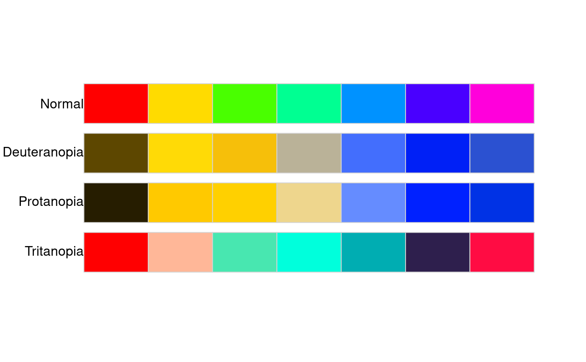

Deciding if a color palette is a colorblind friendly is a hard task. This cannot be done in an entirely automatic fashion, as the decision needs to be confirmed by visual judgments. The goal of colorblindcheck is to provide tools to decide if the selected color palette is colorblind friendly, including:
-
palette_dist()- Calculation of the distances between the colors in the input palette and between the colors in simulations of the color vision deficiencies: deuteranopia, protanopia, and tritanopia. -
palette_plot()- Plotting of the original input palette and simulations of color vision deficiencies: deuteranopia, protanopia, and tritanopia. -
palette_check()- Creating summary statistics comparing the original input palette and simulations of color vision deficiencies: deuteranopia, protanopia, and tritanopia.
The work in this package was inspired by a blog post I wrote some code that automatically checks visualizations for non-colorblind safe colors. Here’s how it works by Gregor Aisch.
Installation
You can install the development version of colorblindcheck from GitHub with:
Example
The colorblindcheck accepts a vector of hexadecimal color descriptions as the input. It can be created using different existing R functions (e.g. rainbow()) or packages (e.g. colorspace, RColorBrewer, rcartocolor, etc.).
library(colorblindcheck)
rainbow_pal = rainbow(n = 7)
rainbow_pal
#> [1] "#FF0000FF" "#FFDB00FF" "#49FF00FF" "#00FF92FF" "#0092FFFF" "#4900FFFF"
#> [7] "#FF00DBFF"The primary function in this package is palette_check(), which creates a summary comparison between the original input palette and simulations of color vision deficiencies - deuteranopia, protanopia, and tritanopia.

#> name n tolerance ncp ndcp min_dist mean_dist max_dist
#> 1 normal 7 12.13226 21 21 12.132257 61.06471 107.63470
#> 2 deuteranopia 7 12.13226 21 18 7.725825 50.11732 91.56339
#> 3 protanopia 7 12.13226 21 19 2.355309 55.41310 88.34820
#> 4 tritanopia 7 12.13226 21 19 8.216194 51.53678 83.10000The palette_check() function returns a data.frame with 4 observations and 8 variables:
-
name: original input color palette (normal), deuteranopia, protanopia, and tritanopia -
n: number of colors -
tolerance: minimal value of the acceptable difference between the colors to distinguish between them -
ncp: number of color pairs -
ndcp: number of differentiable color pairs (color pairs with distances above the tolerance value) -
min_dist: minimal distance between colors -
mean_dist: average distance between colors -
max_dist: maximal distance between colors
Additionally, a plot comparing the original input palette and simulations of color vision deficiencies - deuteranopia, protanopia, and tritanopia can be shown. This help to decide if the selected color palette is colorblind friendly.
For example, the above output shows that the minimal distance between colors in the input palette is about 12; however, the minimum distance between colors simulation of protanopia is only about 2. It can suggest that some colors in this palette would not be distinguishable by people with protanopia.
The palette_dist() function calculates distances between the colors in the input palette, as well as in a simulation of the selected color vision deficiency - deuteranopia, protanopia, and tritanopia. It allows finding which colors are the most or the least similar and to compare the behavior of color palettes for different color vision deficiencies. In the original rainbow_pal object, the closest colors were the third and the fourth one (a distance of about 12); however, the protanopia version has a minimal distance of 2 between the second and third color.
# normal
palette_dist(rainbow_pal)
#> [,1] [,2] [,3] [,4] [,5] [,6] [,7]
#> [1,] NA 52.96503 85.06611 84.19100 52.61836 51.46782 39.46279
#> [2,] NA NA 29.34232 34.74051 65.68745 92.04784 80.83188
#> [3,] NA NA NA 12.13226 69.12782 81.23889 107.63470
#> [4,] NA NA NA NA 56.87222 74.19228 103.11485
#> [5,] NA NA NA NA NA 35.47760 44.20031
#> [6,] NA NA NA NA NA NA 29.94683
#> [7,] NA NA NA NA NA NA NA
# protanopia
palette_dist(rainbow_pal, cvd = "pro")
#> [,1] [,2] [,3] [,4] [,5] [,6] [,7]
#> [1,] NA 73.78789 76.166629 75.13412 58.36222 52.03797 50.317457
#> [2,] NA NA 2.355309 12.76751 64.91260 86.33061 84.667281
#> [3,] NA NA NA 12.48830 66.28036 88.34820 86.569277
#> [4,] NA NA NA NA 56.80334 77.98335 76.869176
#> [5,] NA NA NA NA NA 29.43598 28.504135
#> [6,] NA NA NA NA NA NA 3.553296
#> [7,] NA NA NA NA NA NA NA